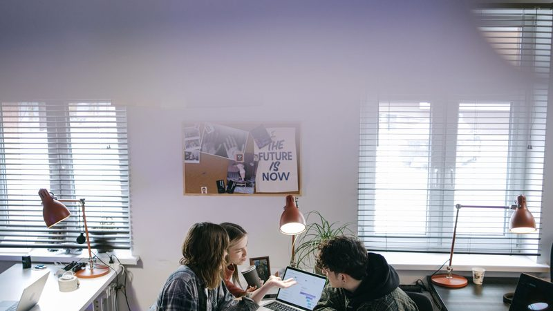
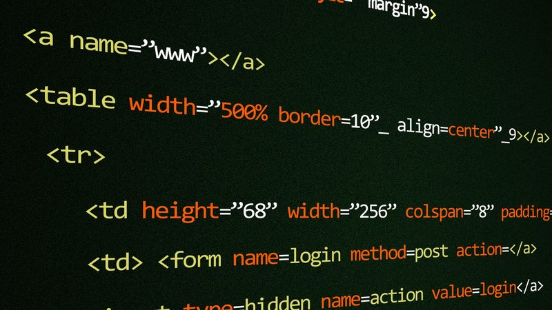
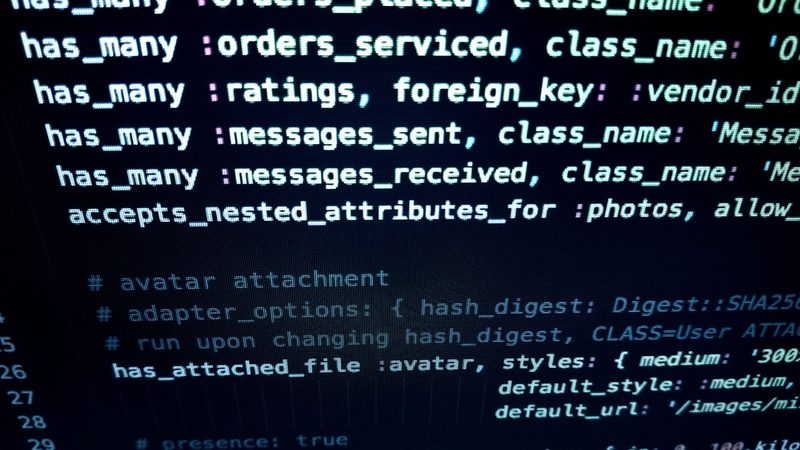
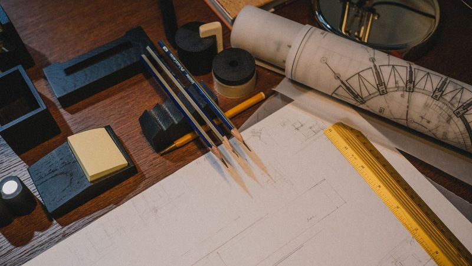
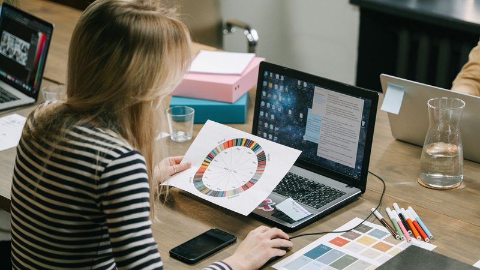
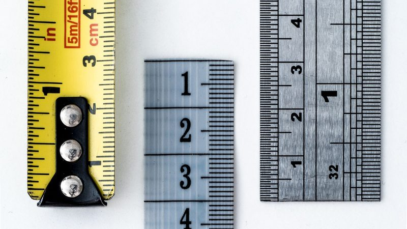
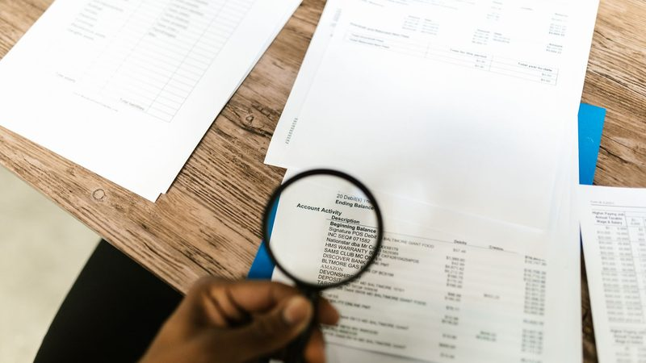
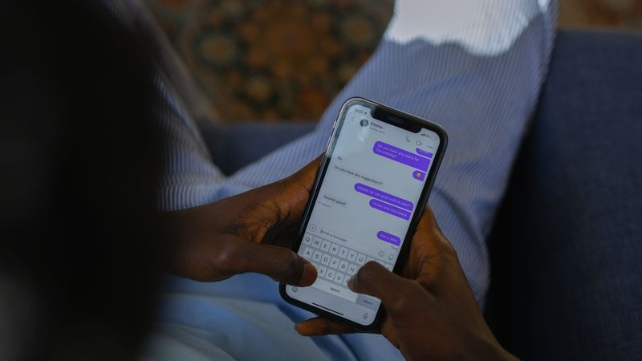
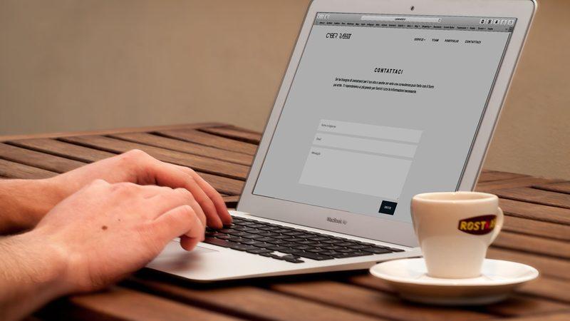
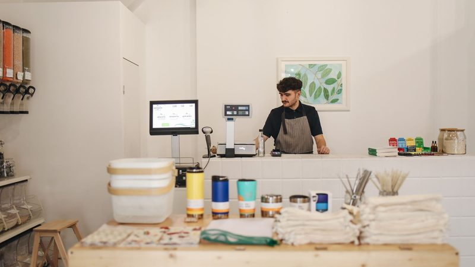

Máte Copilot. Používate ho na písanie mailov
Firmy platia za Microsoft 365 Copilot a využívajú zlomok toho, čo vie. Nie preto, že by bol slabý - ale preto, že nepozná vaše postupy, vašu históriu ani vaše pravidlá. Postavíme nad ním štruktúru pre jeden konkrétny proces, aby prestal byť osobným asistentom a začal byť pracovným nástrojom.

Prečo Copilot vo firmách nedodrží, čo sľubuje
Copilot vie odpovedať len z toho, k čomu má prístup a čomu rozumie. V bežnej firme narazí na tri veci:
- Znalosť nie je zapísaná. Najdôležitejšie vie skúsený človek z hlavy. V dokumentoch to nie je, takže to nenájde ani AI.
- Pospájať sa to už dá. Overiť sa to nedá. Postup v SharePointe, história prípadov v Exceli, rozhodnutie v Teams chate, dáta v ERP — konektorov na to pribudlo množstvo. Lenže keď potom Copilot niečo tvrdí, niet podľa čoho povedať, či to platí.
- Nikto mu nepovedal, ako sa to u vás robí. Bez postupu dáva všeobecnú odpoveď namiesto tej vašej.
Preto dnes výsledok závisí od toho, ako dobre vie konkrétny zamestnanec formulovať otázku. To nie je systém, to je náhoda.
Čo pre vás urobíme
Vyberieme jeden proces, ktorý sa vo vašej firme opakuje a stojí stále rovnakú prácu - napríklad riešenie reklamácie, prípravu ponuky, spracovanie objednávky, zapracovanie nového človeka - a postavíme okolo neho štruktúru:
- Zapíšeme stav pred nasadením - koľko to trvá teraz, ako často sa to musí opravovať, a jednu vetu o tom, čo by znamenalo, že to nefunguje. Bez toho sa po roku nedá povedať, či to niečo prinieslo.
- Zmapujeme, kde znalosť naozaj je - a hlavne kde chýba. Výstupom je aj zoznam vecí, ktoré nikde zapísané nie sú.
- Usporiadame ju tak, aby sa v nej dalo hľadať - kategórie, štruktúra prípadu, prepojenia medzi zdrojmi.
- Nastavíme postup - čo má systém spraviť v ktorom kroku, čo má dohľadať, na čo má upozorniť, kedy má povedať „toto nemám“.
- Overíme výstup na vašich reálnych, už uzavretých prípadoch - porovnanie s tým, ako to dopadlo v skutočnosti.
- Odovzdáme to aj s dokumentáciou, aby to vedel udržiavať váš človek, nie len my.
- Po dohodnutom čase to premeriame - tými istými tromi číslami ako na začiatku. Výstupom je porovnanie dvoch stavov, nie prezentácia - vrátane odpovede „nezlepšilo sa to“, ak tak vyšla.
Poznámka k bezpečnosti: pracujeme vo vašom prostredí Microsoft 365. Vaše dáta z neho neodchádzajú a nepotrebujeme ich kopírovať k nám.
Ako zistíte, že odpoveď je správna
Toto je dôvod, prečo AI vo firmách zostáva pri mailoch. Nie preto, že by nevedela viac - ale preto, že nikto nevie overiť, či je odpoveď správna. Čo sa nedá skontrolovať, tomu firma nezverí rozhodnutie s následkom.
Preto s každým nasadením dodávame dve kontroly, ktoré bežia aj po odovzdaní:
- Kontrola znalosti pri každej zmene. Keď niekto upraví postup alebo pravidlo, strojovo sa overí, či všetko dáva zmysel dohromady - či niektorý krok neodkazuje na pravidlo, ktoré už neexistuje, či sa niečo nevyskytuje dvakrát, či niekde nechýba povinná časť. Čo neprejde, sa nenasadí.
- Pevná sada skúšobných prípadov, ktorú schvaľujete vy. Zadáme ich pred vami a porovnáme odpoveď s tým, čo má vyjsť. Časť z nich je blokujúca - napríklad že systém musí povedať „toto neviem" namiesto vierohodnej vymyslenej odpovede. Ak zlyhá ktorákoľvek z nich, verzia sa nevydáva.
Znalosť do AI dostane ktokoľvek - stačí nahrať dokumenty. Postup napíše tiež ktokoľvek. To, čo obvykle chýba, je dôkaz, že to funguje - a že to funguje aj po zmene, ktorú o pol roka urobí niekto iný.
Ostatné služby

Webstránky
Firemný web, produktová stránka alebo landing page - navrhnuté na to, čo skutočne potrebujete, nie šablóna s vloženým logom. Rýchle načítanie, funkčné na mobile, so základným SEO, aby vás vyhľadávače pochopili.
Čo to znamená pre vás: dostanete hotový, nasadený a fungujúci web - nie grafický návrh, ktorý musí niekto iný naprogramovať.

Automatizácia a integrácie
Ak niečo robíte každý týždeň ručne - prepisovanie údajov medzi systémami, stavanie toho istého reportu, kontrola zmien u dodávateľa - dá sa to nahradiť softvérom, ktorý beží sám.
Čo to znamená pre vás: úloha na dve hodiny týždenne je približne sto hodín ročne. Ak vám to nedokážeme vrátiť, povieme to skôr, než začneme.

Digitálne produkty na mieru
Šablóny, kontrolné zoznamy, kalkulačky, sady scenárov alebo interné nástroje - postavené na váš konkrétny problém a vo vašom jazyku, nie generický materiál.

Dizajn a firemná identita
Logo, farebný a typografický systém, marketingová grafika, prezentácie. Dostanete aj pravidlá použitia a funkčný stylesheet, nie len obrázok loga.
Chatboty
Chatbot na jednu konkrétnu úlohu - odpovedanie na opakujúce sa otázky zákazníkov - s jasne vymedzeným rozsahom, aby si nevymýšľal.
Užitočné čítanie
Kalkulačka zadarmo: oplatí sa na túto úlohu nasadiť AI? - spočíta, koľko tá úloha stojí ročne, a napíše vám podmienku ukončenia ešte pred nasadením.
Zápis pred nasadením zadarmo: tri čísla a jedna veta - vyplniteľný záznam stavu pred nasadením, aby sa o dva mesiace dalo povedať, či to fungovalo. Nič sa nikam neodosiela.

Ako zistíte, či vám AI naozaj niečo priniesla
Ako zmerať prínos AI vo firme: tri čísla, ktoré si zapíšte pred nasadením, a jedna veta, ktorá vám o dva mesiace dovolí projekt ukončiť.
Ktoré firemné rozhodnutie sa oplatí zveriť AI a ktoré nie
Nerozhoduje o tom, aký je nástroj ani aká je úloha zložitá. Rozhoduje jedna otázka, ktorú si viete položiť vopred — a odpoveď na ňu ušetrí mesiace.
Zamestnanci prestanú AI používať po dvoch týždňoch. Školenie to nespraví
Licencie sú kúpené, nadšenie vydrží prvý týždeň a potom je ticho. Dôvod nie je v ľuďoch ani v modeli — a dá sa opraviť tým, čo sa vo firme zapíše.

AI vám ušetrí čas. Overovanie vám ho zoberie späť
Firmy hlásia úsporu z AI a zároveň nemajú menej práce. Dôvod má už aj meno — verifikačná ekonomika. Čo s tým vie firma spraviť konkrétne.
Koľko stojí logo a vizuálna identita pre firmu
Reálne ceny loga a firemnej identity na slovenskom trhu, prečo AI generátor za 20 € niekedy stačí a inokedy nie, a kedy je branding zbytočný náklad.
Automatizácia v malej firme: čo sa oplatí a čo je strata času
Ako spoznať úlohu, ktorú sa oplatí automatizovať, koľko to reálne stojí, a prečo väčšina malých firiem začína na nesprávnom mieste.

Koľko stojí chatbot pre firmu a kedy sa vôbec oplatí
Reálne ceny na slovenskom trhu, rozdiel medzi mesačným predplatným a riešením na mieru, skryté náklady a otázky, ktoré si položte skôr než chatbota zadáte.

Koľko stojí webstránka pre malú firmu (a za čo presne platíte)
Reálne ceny na slovenskom trhu, čo cenu naozaj zdvíha, čo v nej nikdy nie je zahrnuté a podľa čoho poznáte predraženú ponuku.

Potrebuje moja firma webstránku? Úprimná odpoveď vrátane „nie“
Kedy sa web naozaj oplatí, kedy vám stačí profil na Googli za nula eur, a ako spoznať, že vám niekto predáva web, ktorý nepotrebujete.
Cenník
Ceny uvádzame otvorene, hoci väčšina agentúr to nerobí. Je to rýchlejšie pre vás aj pre nás: hneď vidíte, či sa vôbec bavíme o rovnakých číslach. Sumy sú „od“ - konečnú cenu dostanete písomne po tom, ako poznáme rozsah, a už sa nemení.
| Čo | Cena od | Čo cenu mení |
|---|---|---|
| Posudok jedného procesu + ukážka na vašom reálnom prípade | 490 € | pevná cena; ak vyjde, že sa nasadenie neopláca, povieme to |
| Nasadenie jedného procesu do vášho Microsoft 365 | 2 400 € | počet zdrojov dát, stav dokumentácie, počet krokov procesu |
| Každý ďalší proces | 1 400 € | lacnejší, lebo štruktúra už existuje |
| Jednostránkový web (landing page) | 590 € | množstvo obsahu, formuláre, jazykové verzie |
| Firemný web (do 8 podstránok) | 1 190 € | počet stránok, blog, napojenie na externé systémy |
| Automatizácia jednej úlohy | 390 € | počet systémov, kvalita vstupných dát |
| Digitálny produkt na mieru | 290 € | rozsah, či ide o text, tabuľku alebo interaktívny nástroj |
| Logo a základná identita | 390 € | počet výstupov, šablóny, rozsah pravidiel |
| Chatbot | 690 € | rozsah znalostí, napojenie na vaše dáta |
Ceny sú bez DPH. Prevádzkové náklady, ktoré platíte priamo poskytovateľovi (doména, hosting, jazykový model pri chatbote), v cene nie sú - nechceme ich mať cez seba, aby ste neboli na nás viazaní.
Ak sa vám rozpočet a rozsah nestretávajú, povieme to a navrhneme, čo vynechať. Menšia vec spravená poriadne je lepšia než veľká spravená polovične.
Rozsah máte napísaný ešte pred podpisom
Aby ste vedeli presne, čo je v cene, kto čo robí a kde váš človek prevezme štafétu. Bez toho sa najlepšie ponuky rozpárajú až v polovici práce.
- Vaši odborníci zostávajú a systém robí pre nich. Prestanete ručne dohľadávať a prepisovať. Úsudok - a zodpovednosť za rozhodnutie - zostáva na vašom človeku, aj preto, že to tak chcú audity aj zákazníci.
- Prvým krokom je spísať znalosť, ktorá je zatiaľ v hlave. Copilot dokáže pracovať len s tým, čo je zapísané. Ukážeme presne, čo chýba, dáme tomu štruktúru a prevedieme tým vašich ľudí - samotné know-how ale musí prísť od nich, je to ich výhoda.
- Pracujeme s licenciami, ktoré už máte. Nič nové nekupujete a nie ste viazaní cez našu faktúru. Prevádzkové účty (doména, hosting, jazykový model) zostávajú na vaše meno.
- Staviame vrstvu nad vaším QMS, ERP a SharePointom. Nič nemigrujete a nič nevypnete. Vaše systémy zostávajú tam, kde sú.
- Prihlasovanie, podpisovanie a peniaze vraciame človeku. Zámerne. Automatizujeme kroky okolo, rozhodnutie s právnym alebo finančným následkom nechávame na vás.
- Dostanete zdrojový kód aj dokumentáciu. Aby to vedel udržiavať váš človek. Úpravy vieme robiť aj my za pevný poplatok, prípadne vám postavíme administračný panel - dohodneme to vopred, nie potom.
- Ak sa niečo nedá spraviť poriadne, povieme to skôr, než začneme. Aj keď to znamená menšiu zákazku alebo odporúčanie na niekoho iného - ilustrátora, tlačiareň, špecialistu na e-shopy. Menšia vec spravená poriadne je lepšia než veľká spravená polovične.
Ako pracujeme
1. Poviete, čo nefunguje. Konkrétny problém poviete lepšie než zadanie - „strácame dopyty, lebo nás ľudia nenájdu“ ukazuje niekam konkrétne.
2. Dostanete písomnú ponuku. Čo presne dostanete, v akých formátoch, koľko to stojí a dokedy. Pevná suma, dohodnutá predtým, než sa začne pracovať - žiadne hodinové účtovanie a žiadna prekvapivá faktúra.
3. Postavíme to. Uvidíte rozpracovanú verziu, nie hotovú vec predloženú ako finálnu. Dve kolá úprav sú súčasťou ceny.
4. Patrí to vám. Plné komerčné práva vrátane zdrojových súborov. Žiadne mesačné poplatky a žiadna závislosť od nás.
Pozrite si našu prácu
Tento web, produkty, nástroje aj systém, ktorý to všetko publikuje - postavili sme to my. Je to živé, funguje to a dá sa to overiť za minútu. Pozrite si to.
Riziko nesieme my. Pevná cena a písomný rozsah dohodnutý predtým, než sa začne pracovať. Ak sa práca ukáže ťažšia, než sme odhadli, je to náš problém - nie upravená faktúra. Výsledok je váš vrátane zdrojových súborov, bez mesačných poplatkov a bez viazanosti.
Ozvite sa
Stránka je aj v angličtine.